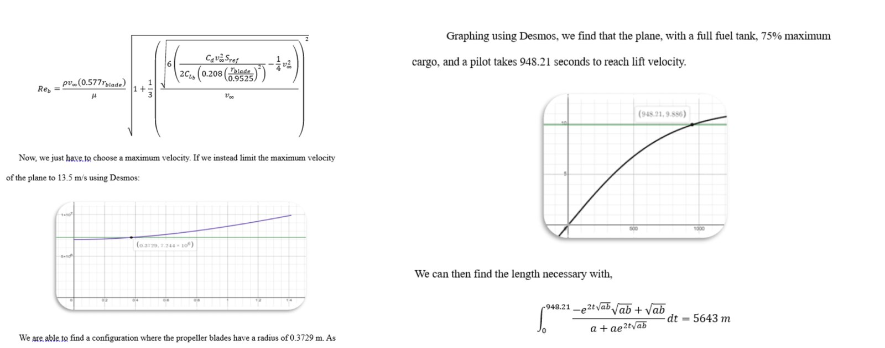
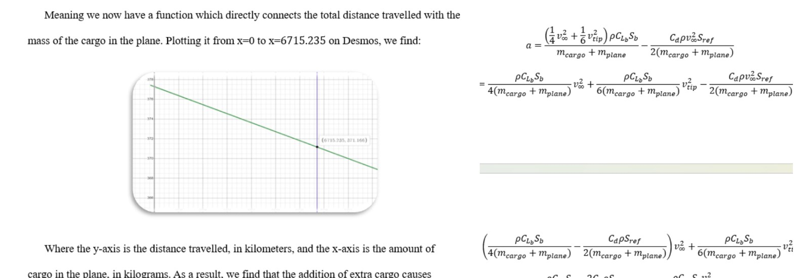

Independent Aerospace Analysis · Applied Differential Equations
Propeller Aircraft on Titan
A first-principles exploration of how a Cessna 172–class aircraft would perform in Titan’s dense, cryogenic, low-gravity atmosphere—and how its propeller might be redesigned for that environment.

What happens when an Earth aircraft is placed in an alien atmosphere?
Inspired by NASA’s Dragonfly mission, I built a mathematical model around a familiar reference aircraft: the Cessna 172. The study compared Earth and Titan conditions, then investigated lift, drag, propeller thrust, Reynolds number, takeoff performance, payload, and range.
What I modeled
- Lift and minimum flight speed under Titan gravity and atmospheric density.
- Propeller thrust and aircraft drag at steady flight conditions.
- Propeller Reynolds-number behavior in Titan’s dense, low-viscosity atmosphere.
- Aircraft acceleration as a nonlinear differential equation.
- Velocity as a function of time and range as its definite integral.
- Propeller-radius changes intended to improve the predicted operating envelope.
Connect atmosphere, aircraft geometry, propulsion, and time.
I began with the four forces of flight, then used Cessna specifications to estimate lift and drag parameters. A propeller thrust relation was coupled to aircraft drag, and the net force was divided by total mass to produce a velocity-dependent acceleration model.
Rewriting acceleration as dv/dt produced a separable nonlinear differential equation. Solving it yielded velocity as a function of time; integrating that expression over the fuel-duration interval produced a range estimate as a function of payload.

Dense air improves lift—but creates a difficult propeller regime.
Within the assumptions of the model, Titan’s low gravity and high atmospheric density allowed large theoretical payloads and very low stall speeds. The same environment, however, drove the propeller Reynolds number high enough that the study’s selected stability constraint became the dominant limit on forward speed.
The analysis therefore exposed a system-level tradeoff: favorable lift and payload conditions did not automatically produce a practical transport aircraft because propeller behavior and acceleration constrained the usable flight envelope.
Use the model to propose a Titan-specific geometry.
I treated blade radius as a design variable and related it to chord length and blade area. The resulting model identified a shorter propeller configuration intended to reduce the Reynolds-number constraint while permitting a higher forward speed.
Read the complete derivation, assumptions, results, and sources.
The full paper includes the atmospheric assumptions, aircraft data, propeller equations, differential-equation derivation, payload and range model, takeoff calculation, redesign study, and bibliography.